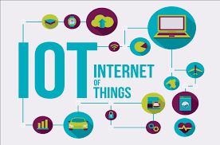
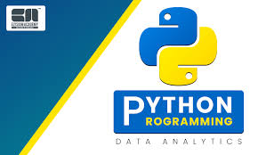

Industrial Design

Industrial Design (ID) is the professional practice of designing products, devices, objects and services used by people.
Internet Of Things
The Internet of Things (IoT) refers to a system of interrelated, internet-connected objects. .
Javascript

JavaScript is a scripting or programming language that allows you to implement complex features on web pages
Python
Python is a general-purpose programming language that is becoming ever more popular for data science.
Start-Up 101
Startup 101 is the Entrepreneurship Center's core.
UX-Research

UX (user experience) research is the systematic study of target users and their requirements,
to add realistic contexts and insights to design processes.
UI/UX
UX and UI design are two different elements of a single consumer experience.
UX refers to the user experience, which focuses on how something works and how people interact with it. UI, or user interface,
focuses on the look and layout.
Professional Development
Personal development is a lifelong process.
It is a way for people to assess their skills and qualities,
consider their aims in life and set goals in order to realise and maximise their potential.
Kotlin
Kotlin is a free and open source project under the Apache 2.0 license. The code for the project is developed openly on GitHub primarily by the team employed at JetBrains, with contributions from Google and others.
Quote Of The Day
IT'S NOT THAT WE USE TECHNOLOGY WE LIVE TECHNOLOGY